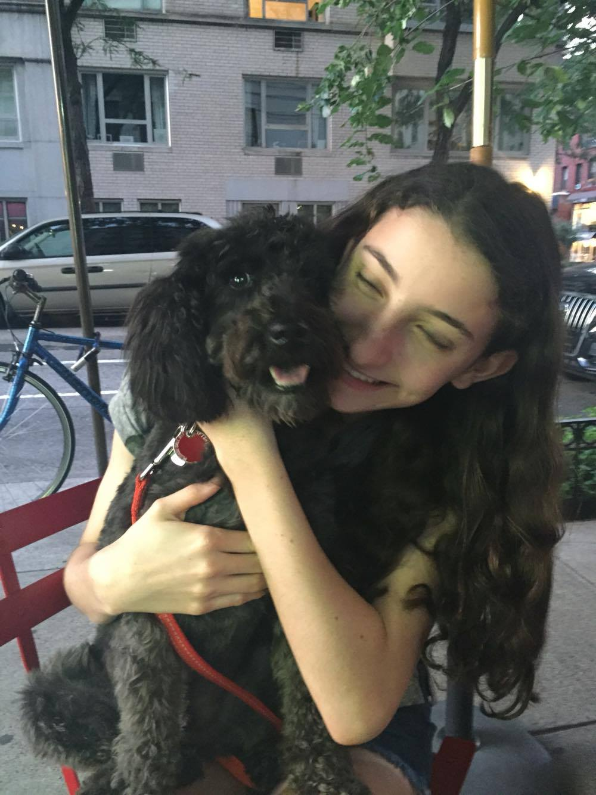

Our Purpose
Are a hgihschooler in NYC searching for community service opportunities? Are you overwhelemed by the endless options, or not quite sure where to start looking? This website is designed to help you find your ideal volunteering opportuity. We have compiled volunteer positions for highschoolers in numerous non profit organizations across NYC.
About Hannah
idea creator, website designer
Hi! I'm Hannah and I go to the Spence school, an all girls school in NYC. I am passionate about community service and computer science. Over the past 2 summers I have volunteered with Go Project, and Summer Steps, two non profit educational organizations that serve at risk kids. In school, I am a head of the hospital oureach club. We play with younger kids who have lacked social opportunities due to their illnesses. I started searching for community service opportunities freshman year. I spent hours wandering on google struggling to find an organization that suited my interests and offered positions to highschool students. I was overwhelemed by the vastness of the internet and the endless posibilities. I created this website in order to make the volunteer - finding process less intimidating and easier to navigate.
